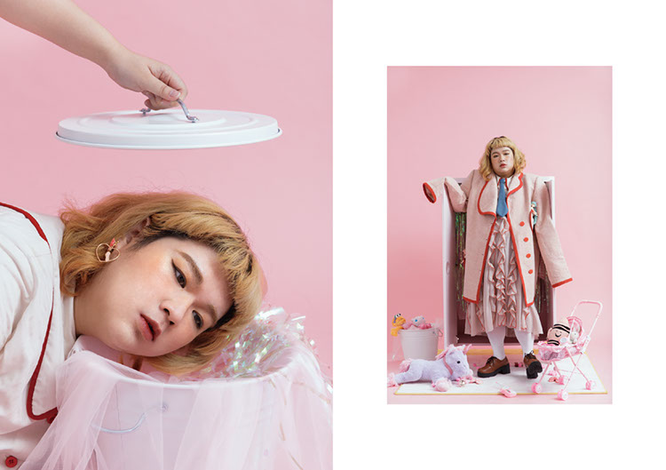
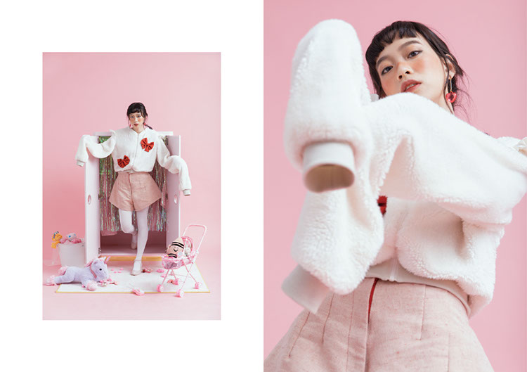
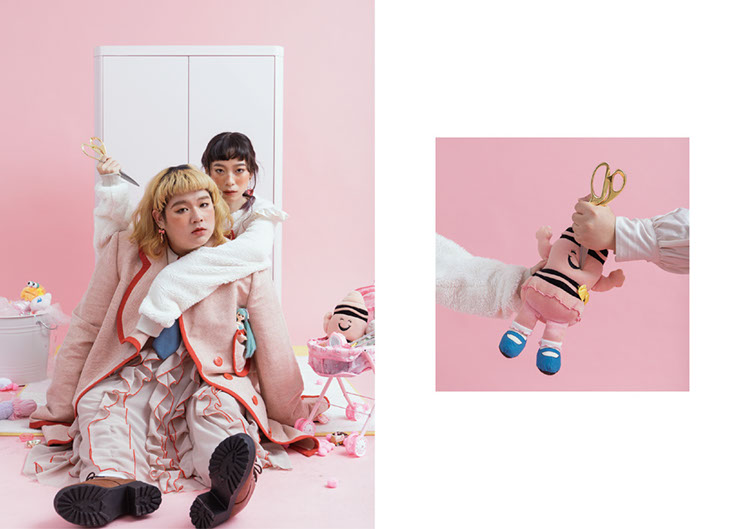
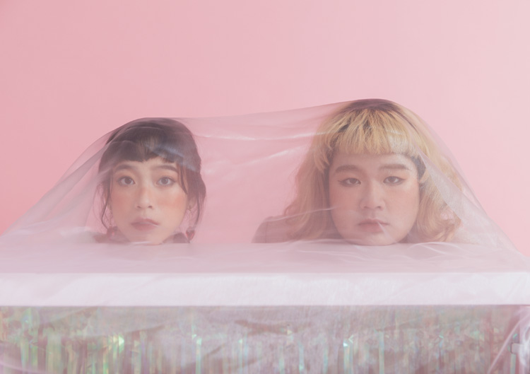
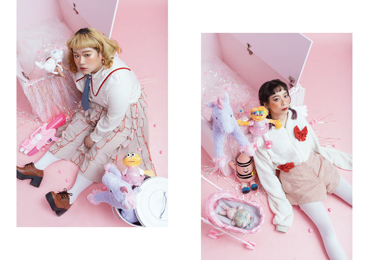

moochan chen's art

厭女 misogyny
服裝設計, 2018
-
Fashion Designer / Hsin Chen
Model / Lilyco & Yuhsin Yang
Makeup and hair artist / Twiggy
Photographer / Chy Lin
厭女這個主題其實很大，而且發生在任何人身上，但討厭身為女性只是厭女情節的一小角而已。
在過去，我曾經厭惡自己身為女性，擁有陰性氣質，排斥自己的性別，長大後在理解這種狀況的過程當中，我發現厭女是一個難以改變的現象，使我產生一種強烈的無奈感。
在服裝上使用了一些性別刻板印象及寬鬆的符號，我認為造成我厭惡自己身為女性的一個很重要的點是因為我的身材焦慮，因為身材胖，我覺得我很難溝到那個身為女性的門檻，因為人們總是說男生的體重本來就會比女生還重，然後我就是那個例外，每次的身體檢查表上面的體重我就是那個比眾男生們的數字還大的那個女孩。所以我討厭身體檢查，所以我討厭自己不像女生，那我乾脆也不要成為女生，我不去在意穿著，我不想在意裙子，我穿的寬大，我像男生一樣穿那種衣服就不用去面對這樣的焦慮，而且可以省去很多女性的限制，我想成為男生，我在網路上打的性別都是男生，因為我覺得身為男性在這個社會上獲得的自由跟容許總是比較多。
但我並不是真的想成為男生，我並不是真的討厭我原生的性別。
我害怕的是那種枷鎖總是落在我們身上的焦慮感。




